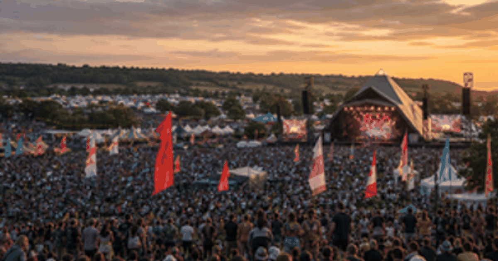
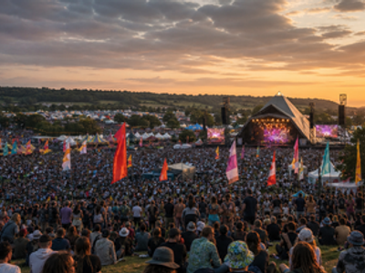

music festivals event guide
Glastonbury Festival
A compact OneSliders guide to what the event is, how the current edition works and which stages matter most.

More music festivalsInterested in more music festivals?Explore related events, places and calendar moments.
Glastonbury Festival is tracked here as an evergreen event, with the general guide separated from the selected edition.
The year slide holds selected-year practical details. The stages slide breaks the event into named parts that can be updated before and after the event.
Verified records should be added from the official organiser before replacing this placeholder.
- Selected edition: 23 Jun - 27 Jun 2027.
- Host context:
 United Kingdom.
United Kingdom.
| Year | Host / place | Country |
|---|---|---|
| 2027 | Somerset | |
| 2026 | Somerset | |
| 2025 | Somerset | |
| 2024 | Somerset | |
| 2023 | Somerset | |
| 2022 | Somerset |
Edition guide
Glastonbury Festival 2027
Switch between recent editions without leaving the one-slider.
Countdown to the start of this edition.
Dates come from the OneSliders event index for this edition.
Ticket windows and resale rules can change.
The stages slide separates the event into planning-friendly parts.
Broadcast information is edition-specific.
The general event guide stays evergreen while this slide changes by edition.